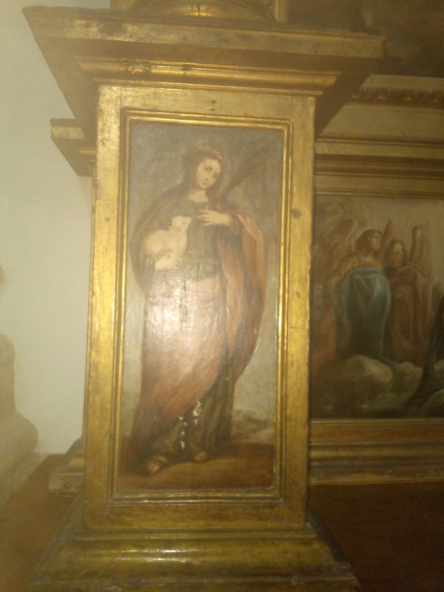
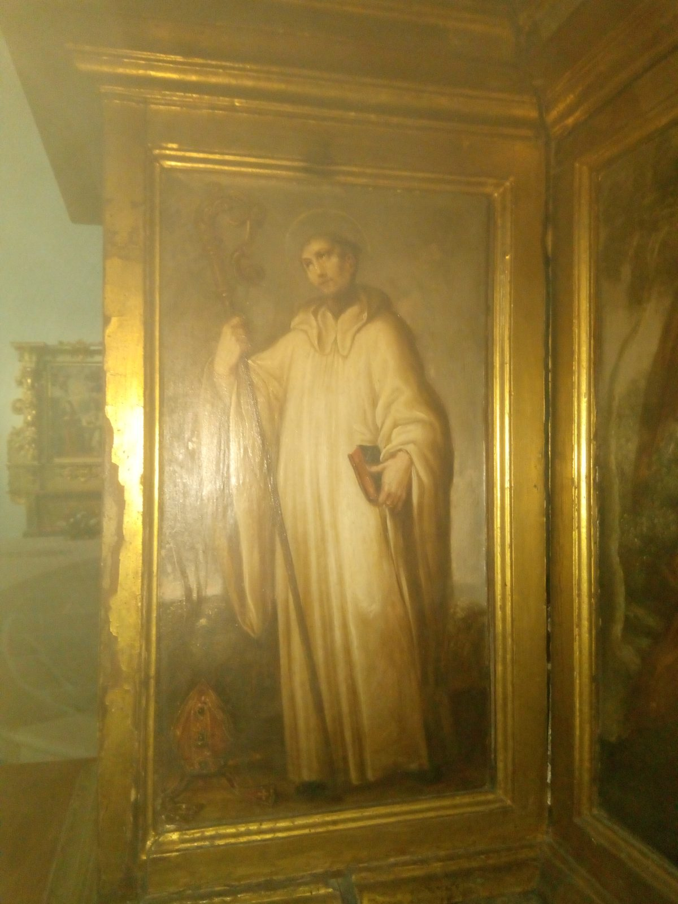
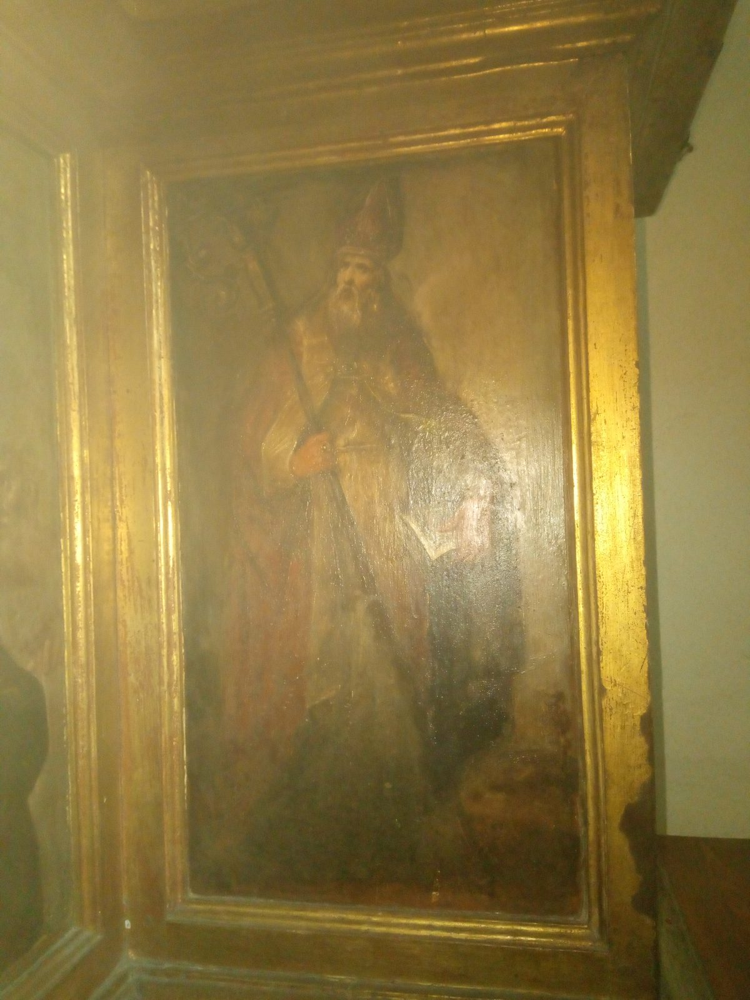
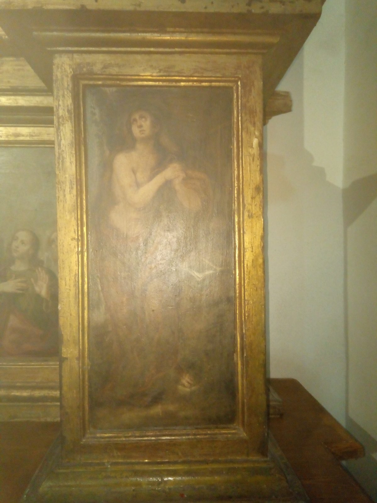
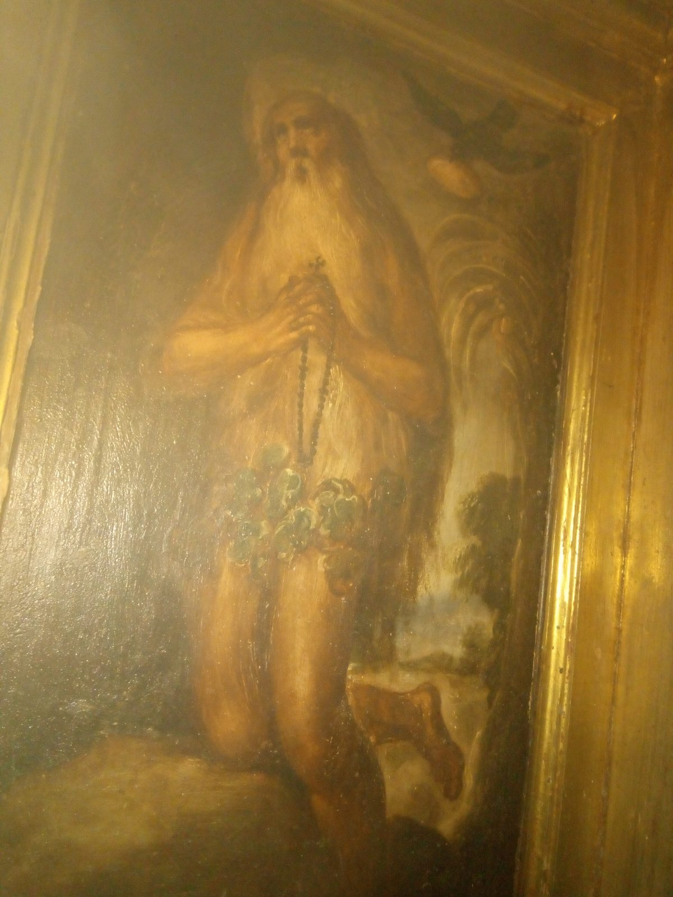

Retablo de la Inmaculada

A la derecha del retablo mayor se encuentra el segundo retablo colateral. Lo contrató en 1632 el arquitecto Martín Ferrer, y se pagó con el legado testamentario de un sacerdote de Pinto, Juan Romano, que está enterrado a sus pies. Se hizo con madera de pino de Cuenca y de Valsaín (Segovia) y se doró a partir de 1659. Se diseñó siguiendo el modelo del retablo colateral izquierdo, para que ambos formaran pareja; en su origen estaba dedicado a Nuestra Señora de la Antigua.
Estructura
Como su compañero, tiene banco, dos cuerpos con tres calles separadas por columnas corintias y un ático con frontón triangular rematado por dos bolas.
Imágenes
- En el cuerpo inferior, una talla de la Inmaculada Concepción, entre las pinturas de San Isidro labrador, patrón de los agricultores, y San Roque, que cuidó de los enfermos de la peste.
- En el cuerpo superior, una talla de San Sebastián, más pequeña y probablemente añadida después (quizá procede de la antigua ermita de San Sebastián, en las afueras de Pinto), entre las pinturas de Santa Catalina de Siena y Santa Teresa de Jesús, canonizada en 1622.
- En el ático, Santiago apóstol en la batalla de Clavijo.
- En la puerta del sagrario, Cristo atado a la columna, y en el banco, escenas de la vida de Cristo como su Bautismo, la Oración en el Huerto, el Prendimiento y la Resurrección.
El banco
En el banco aparecen también pinturas de santos, emparejados de dos en dos.






Santa María Egipcíaca
Conocemos su vida gracias a Sofronio, patriarca de Jerusalén en el siglo VII. Nacida en Egipto, a los doce años se marchó a Alejandría, donde llevó una vida de pecado. A los veintinueve viajó a Jerusalén para la fiesta de la Exaltación de la Santa Cruz, pero, al intentar entrar en la iglesia del Santo Sepulcro, una fuerza misteriosa se lo impidió. Ante un icono de la Virgen pidió perdón y decidió cambiar de vida. Una voz le dijo: «Si cruzas el Jordán, encontrarás un glorioso descanso». Tras comulgar en el monasterio de San Juan Bautista, a orillas del Jordán, se retiró al desierto, donde vivió como ermitaña el resto de su vida.
Poco antes de morir contó su historia al monje San Zósimo, que la encontró en el desierto y le dio la comunión. Es patrona de las mujeres penitentes.